Introduction
DarkRadiant is a level editor for Doom 3 and The Dark Mod, developed by The Dark Mod team. It may also be used for editing levels for similar id Software games such as Quake 4.
This User Guide describes the features and functionality of DarkRadiant, however it is not intended as a guide to mapping techniques. Level design is a complex topic, and is covered by various other learning resources, some of which are listed below.
- The Dark Mod Wiki
-
The starting point for most Dark Mod documentation and tutorials, including gameplay, configuration and editing.
- ModWiki
-
Online wiki covering editing topics for vanilla Doom 3 and similar engines.
- The Dark Mod forums
-
Online community for discussion of the Dark Mod, including various ad-hoc mapping tutorial threads posted by individual users.
Editing workflow
The level editing process starts off with basic assets: models, textures, sounds, entity definitions, skins, animations and so on. Many of these assets will be packaged with a particular game installation, but a level designer may also choose to create custom assets for a specific mission. These assets are installed into a directory tree which is accessible both by DarkRadiant (for editing) and the game engine itself (for playing the mission).
Once assets have been arranged in DarkRadiant according to the wishes of the
level designer, a .map file is saved to disk. This is a text file in a format
understood by the game engine, and includes both level geometry and references
to the assets used in the map. Since the .map file is simply text, and does
not actually embed the binary asset data, it tends to be fairly small.
The game engine includes functionality to compile the .map file into a
.proc file containing low-level vertex geometry derived from the brushes and
patches within the .map file. The game engine can then render the mission in
realtime, making use of the same assets that were accessed by DarkRadiant during
editing.
DarkRadiant also maintains its own separate file containing various editing
information, such as object layers used within a map. This .darkradiant file
is never used by the game engine, and is non-critical — a .map file with no
accompanying .darkradiant file can still be edited with DarkRadiant, although
certain DarkRadiant-specific state may be lost.
What’s in a MAP?
There are three main types of object contained within a .map file: entities,
brushes and patches.
Entities are the top-level objects in a map — essentially, a map file is just a list of entities. Every entity has an entity class which determines the type of entity it is: static mesh, AI, sound emitter, particle emitter, light etc. Entities also store a list of string key/value pairs, known as spawnargs or properties. Some entities also contain brushes and patches as children.
Brushes are convex solids used to define basic map geometry: walls, floors, ceilings, steps and other medium to large items. Brushes are often rectangular in shape, although a brush can actually have any number of faces provided that it is convex (it is impossible to have a brush in an L or a U shape, for example). Brushes are not smooth-shaded by the game engine, which generally makes them unsuitable for representing curved surfaces.
Patches are smooth one-sided surfaces used to represent curved objects such as vaulted ceilings, pillars or cave interiors. A patch is defined by a number of Bezier control points, and offers control over the level of detail used when subdividing the patch into triangles for rendering: more triangles will produce a smoother surface but may lower rendering performance.
The entities, brushes and patches in a map are arranged in a hierarchy: not every entity has children, but every brush and patch must have an entity as a parent. Each map therefore starts with a single default entity called the worldspawn, which acts as the parent for new brushes and patches created in DarkRadiant.
Initial configuration
Choosing a game type
When running DarkRadiant for the first time, the Game Setup dialog will be shown. This is where you configure the path to the game installation from which DarkRadiant will load assets, such as textures, models and entity definitions.
The Game Setup dialog contains the following options:
- Game Type
-
DarkRadiant ships with support for several different game engines, each of which is contained within a
.gamefile. For editing Dark Mod missions, the default choice ofThe Dark Mod 2.0 (Standalone)is the one to use, but it is also possible to edit stock Doom 3 or Quake 4 missions. - DarkMod Path / Engine Path
-
This is the path to the game installation on the system. The label text will change depending on whether the selected game is
The Dark Modor another engine. - Mission
-
Optional path to a subdirectory containing assets specific to a particular mission which is being worked on. For game types other than
The Dark Mod, this will be displayed as Mod (fs_game), and should be set to the path of a subdirectory containing a particular game mod, if one is being used. - Mod Base (fs_game_base)
-
This field only appears for non-DarkMod game types. It allows a two-level mod structure, where the Mod Base can point to a major game mod, possibly downloaded from elsewhere, while Mod can be set to point to an entirely local "sub-mod" which contains local changes and overrides. Before the release of Dark Mod standalone, this field would have been set to
darkmodwhile the Mod field would have been set to the local mission, however this is no longer necessary whenThe Dark Mod 2.0 (Standalone)is being used.
Once the game paths are set up, click the Save button to proceed to the main DarkRadiant interface.

|
It is possible to Cancel the Game Setup dialog and proceed to the main window without configuring a game installation, in which case DarkRadiant will show a warning and ask if you wish to proceed. If you do, DarkRadiant will run but there will be no available textures, models, entities or other game assets. |
Interface layout
DarkRadiant ships with a number of different user interface layouts, which
control the position, visibility and window type of the major interface
elements. The current layout can be changed from the View → Window Layout
menu, and will require DarkRadiant to be restarted.
There is currently no support for custom layouts, however all of the provided layouts allow window sizes and splitter positions to be changed, and the changes will persist through multiple editing sessions.
- Embedded
-
A large 2D window is shown on the right, while the left-hand side is divided vertically into the 3D camera window and a tab widget containing the main editing panels. There are no floating subwindows in this layout.
- Regular
-
A legacy GtkRadiant layout which places the 2D window on the left, the 3D camera view on the top right, and a 2D scrolling textures panel on the bottom right. Other tabs in the editing panel are shown in a floating window.
- RegularLeft
-
The same as Regular except the full-height 2D window is on the right and the 3D window and texture panels are on the left.
- Floating
-
The 2D window, 3D window and editing tab widget are all shown in separate floating windows which always appear above the main DarkRadiant window. The main window itself is empty apart from the toolbars and status bar. This is the most flexible layout, since each subwindow can be sized or positioned as desired, but the multiple subwindows may be cumbersome to manage.
- SplitPane
-
Three separate 2D windows, showing each of the major axes, are shown alongside the 3D camera view in a 2x2 layout similar to traditional 3D modelling applications. The editing tab widget is in a floating window.
Colour schemes
DarkRadiant defaults to a black-on-white colour scheme in the 2D windows, but
ships with four other colour schemes, which can be accessed under View →
Colours…. If you prefer a dark theme, the Black & Green scheme might be
suitable, whereas the Maya/Max/Lightwave Emulation and Super Mal themes
provide a more neutral, low-contrast look.
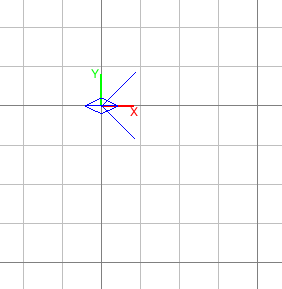 |
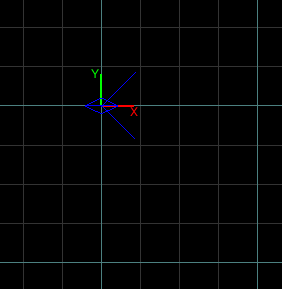 |
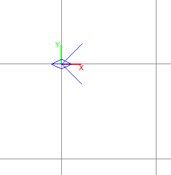 |
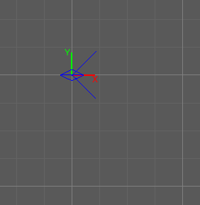 |
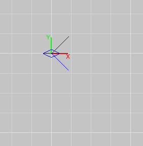 |
Each of the colour schemes can be edited using the colour selector buttons in the Colours dialog, and it is also possible to copy one of the default schemes into a custom scheme with a new name.
|
|
The game installation may specify the colour of certain entity types, in which case it will not be possible to change the colour of these entities via the Colours dialog. |
Basic editing
Navigating the 2D view
The game world is a three-dimensional vector space with a central origin, rendered in the 2D editing window as a grid. The unit of measurement is an arbitrary game unit which does not directly correspond to any real-world measurement system — in The Dark Mod, a typical human stands around 80 - 90 game units high, making a game unit about 2 cm.
Each 2D window shows which axes it is representing with an icon in the top-left
corner, as well as an identical icon at the <0,0,0> origin position, if
visible within the view.
The 2D view also shows the current position of the camera (used for rendering the separate 3D camera view window), and its view direction.
The following commands are available within the 2D view:
Right drag |
Scroll the view horizontally or vertically |
|---|---|
Mouse wheel |
Zoom the view |
Shift + Right drag |
Zoom the view (alternative binding) |
Ctrl + Middle click |
Move the camera directly to the clicked position |
Middle click |
Rotate the camera to look directly at the clicked point |
Ctrl + TAB |
Change view axis (XY, XZ, YZ) |
Ctrl + Shift + TAB |
Center 2D view on current camera position |
Adjusting the grid
The grid shown in the 2D view is used to snap the position and size of brushes and patches, as well as the centerpoints of entities. The size of the grid can be configured, in powers of 2, from 0.125 up to 256, using the 1-9 keys on the main keyboard (not the numeric keypad), or the equivalent options in the Grid menu.
The 0 key on the main keyboard can be used to toggle the display of the grid. Note that objects will still be snapped to the grid even if the grid is not visible; this is purely a visual toggle.
| Level geometry built from brushes and patches should always be snapped to the grid to avoid problems such as rendering glitches and map leaks. Static meshes and animated AI can be positioned more freely, however grid snapping is a useful tool for ensuring that models are appropriately aligned with the level geometry. |
Using the 3D camera view
The 3D camera view provides an approximate rendering of the map in three dimensions, in several different render modes: wireframe, flat shaded, textured, and fully lit by in-game light sources. While the 2D view is the main interface for creating and aligning level geometry, the 3D view is a vital tool for tasks such as texturing, or configuring light parameters.
| The fully lit rendering mode in DarkRadiant is very limited, and only offers a partial view of what the game engine will ultimately render. In particular, there are no shadows or foglights. |
The 3D camera view provides its own toolbar which can be used to configure various display settings.
Render in wireframe mode |
Render objects as wire meshes. |
|
|---|---|---|
Render in flat-shaded mode |
Render objects as coloured solids, without textures or lighting. |
|
Render in fullbright textured mode |
Render objects as preview textures, with no lighting or material effects such as transparency. |
|
|
Render in lighting preview mode |
Render all available lighting and texture effects. |
|
Start render time |
Begin rendering animated effects. |
|
Stop render time |
Stop rendering animated effects. |
Clip plane in |
Move the far clip plane closer to the camera. The far clip plane is a performance optimisation which avoids rendering geometry more than a certain distance away from the camera. |
|
Clip plane out |
Move the far clip plane further away from the camera. |
The 3D view always renders the scene from a particular camera position, which is shown in the 2D view as a blue diamond. This camera position can be set directly from the 2D view with Ctrl + Middle click, and the camera view direction can be set with Middle click. There are also various options within the 3D view itself to adjust the camera position.
Right click |
Enter or leave free camera mode. In this mode, moving the mouse around updates the camera view direction in real-time, and moving the mouse around while holding Ctrl causes the camera to move up/down/left/right according to the camera motion. |
|---|---|
Default mode (not free camera) |
|
Left/Right arrow |
Pan the camera left or right |
Up/Down arrow |
Move the camera forwards or backwards on the horizontal plane, without changing its height on the Z axis. |
Free camera mode |
|
Left/Right arrow |
Move ("truck") camera left or right, leaving view direction the same. |
Up/Down arrow |
Move ("dolly") the camera forwards or backwards along its view axis |
Manipulating objects
Every object in a map can be selected and moved within the 2D view. Some objects — including brushes, patches and lights — can also be resized.
For more advanced ways to select objects, see brush-based selection.
Shift + Left click |
Select or deselect the object at the clicked position. Any existing selected objects will remain selected. If the clicked position overlaps more than one object, the closest one (according to the current 2D view axis) will be affected. |
|---|---|
Alt + Shift + Left click |
Select the object at the clicked position, and deselect any existing selected objects. If the clicked position overlaps more than one object, each click will cycle through the overlapping objects. |
Shift + Left drag |
Draw a selection rectangle, which will select any objects contained (fully or partially) within it. |
ESC |
Deselect all objects |
Left drag (inside object) |
Move the selected object(s) |
Left drag (outside object) |
Resize the selected object(s) (if available) |
Space |
Duplicate the selected object(s) |
Backspace |
Delete the selected object(s) |

|
Like other editors in the Radiant family, DarkRadiant offers a rather unusual system for resizing objects. Rather than clicking exactly on the edge, or on a dedicated resizing handle, you can click and drag anywhere outside an edge to move that edge inwards or outwards. Dragging outside a corner allows you to move two edges at once. |
Flipping and rotating
DarkRadiant provides six buttons to quickly flip or rotate objects (in 90 degree increments) around each of the three world axes. These are available on the left-hand vertical toolbar.
Flip along the X axis |
|
Rotate around the X axis |
|
|
Flip along the Y axis |
Rotate around the Y axis |
|
|
Flip along the Z axis |
Rotate around the Z axis |
Manipulator modes
For more precise control over object motion, there are three manipulator modes which can be selected with buttons on the left-hand vertical toolbar.
|
Translate mode |
A manipulator widget with axis-aligned arrows will be displayed at the selected object’s center. Click and drag one of the arrows to move the object along that axis, or drag inside the manipulator box to move the object in two dimensions. This mode may be useful for moving brushes around without accidentally resizing them. |
|---|---|---|
Rotate mode |
A widget with three axis-aligned rings will be displayed at the selected object’s center. Drag a ring to rotate the object by any arbitrary amount around that ring’s axis. |
|
Resize mode |
This is the default Radiant drag mode (hence the "QE" icon referring to the original QERadiant) which allows you to move objects by dragging inside them and resize by dragging outside the boundary edges. |
Working with brushes
Brushes are the basic building blocks of all maps. Typically they are used for coarse-grained level geometry such as walls, ceiling and floors. Brushes also have a vital role in sealing a map from the void: even a map built entirely from patches and static meshes must still be surrounded by brushes in order to avoid leaking.
Creating a brush
To create a simple rectangular brush, ensure that nothing is selected (ESC), then Left drag in the 2D view. A new brush will be created and sized according to the dragged area, with its dimensions snapped to the current grid level. To adjust the third dimension of the brush (perpendicular to the view direction), used Ctrl + TAB to switch the 2D view axis, and Left drag outside the brush boundary to adjust the size.
|
|
Whenever you drag to create a new brush, the third dimension will match the size of the most recently selected brush. This makes it easy to draw a series of brushes with the same height, such as when you need to create a series of floors or walls in succession. To match the height of an existing brush, simply select (Shift + Left click) and deselect it (ESC) before drawing the new brush. |
More complex brush shapes
Although each brush starts out as a six-sided cuboid, it doesn’t have to stay that way. DarkRadiant offers several options for creating multi-sided brushes in more complex shapes. To create one of these shapes, first define a regular cuboid brush covering the volume you want the new shape to occupy, then choose the appropriate option from the Brush menu:
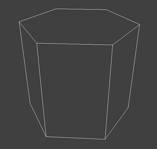 |
Prism An n-sided approximation of a cylinder, with the axis of the cylinder aligned with the current 2D view. |
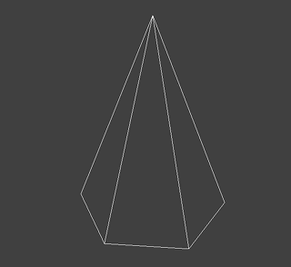 |
Cone A tapered n-sided cone, which always points upwards regardless of the 2D view axis. |
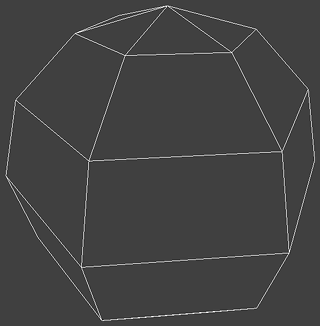 |
Sphere A rotationally symmetric n-sided approximation of a sphere, with the axis of rotation pointing upwards. |
While these shapes can be useful for certain architectural modelling, remember that brushes are always flat-shaded and are not generally a good substitute for spheres or cones created with patches or static meshes.
Creating a room
Although it is not too difficult to create a hollow room by creating floor, ceiling and wall brushes manually, this is a common enough operation that DarkRadiant provides a couple of shortcuts. These options can be found on the vertical toolbar at the far left of the main window.
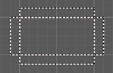 |
Create Room Create a room whose interior size matches the size of the currently-selected brush. The wall thickness will be equal to the current grid size. |
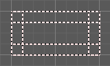 |
Hollow Hollow out the selected brush, leaving the exterior dimensions the same. The wall thickness will be equal to the current grid size, but the wall brushes will overlap at the corners, rather than just touching each other as with Create Room. This is legacy tool from GtkRadiant, and generally inferior to Create Room. The overlapping wall brushes make it more difficult to precisely align interior textures, since part of the inner face is obscured (and therefore removed during map compilation). However, there may be occasional situations in which Hollow is useful, so it is retained in DarkRadiant. |
The room creation tools do not require the initial brush to be rectangular — you can quite happily Create Room with a triangular or trapezoidal brush, or a brush with sloping sides. However, with a more complex brush shape, the complexity of the resulting wall geometry increases considerably, so attempting to hollow out a 7-sided sphere is probably ill-advised.
Splitting brushes
Sometimes it is necessary to divide a brush into two or more pieces, perhaps to create a doorway or other opening. The Clipper tool, accessed with the X key, is used for this purpose.
-
Select the brush to be split (the Clipper can be activated with nothing selected, but it will not do anything useful).
-
Press X to activate the Clipper, or click on the respective icon on the left-hand editing toolbar.
-
Click in the 2D window at two different positions, to define the plane along which the brush will be split. The proposed split plane will be highlighted in blue; feel free to change 2D view axis with Ctrl + TAB or use the 3D camera view to better visualise the split plane.
-
Once the split plane is defined, press Shift + Enter to execute the split and keep both halves of the brush; press Enter to execute the split and keep only one half. The part of the brush that is kept with Enter depends on the order in which you define the clip points: the points (marked 0 and 1) will appear clockwise on the brush edge according to the current 2D view. If in doubt, just use Shift + Enter to keep both parts, and delete the unwanted one afterwards.
-
Repeat the process to perform additional splits on the selected brush, or disable the Clipper with the X key. The Clipper is a toggled tool and will remain active until disabled.
|
|
It is possible to create three split points before executing the split, which will define a split plane in three dimensions. Defining a three-point split plane which is actually useful, however, may be challenging. |
Reshaping brush edges
All brush edges can be moved independently, which gives you the ability to quickly create shapes like triangles or trapeziums. This functionality is accessed via the Select Edges tool on the upper toolbar, or with the E key.
-
Select a brush.
-
Activate Select Edges with the toolbar button or E key. DarkRadiant will place a green control point at the center of each brush edge.
-
In either the 2D or the 3D view, click and drag on a control point to move its edge. The control point will turn blue and move along with the cursor. In the 2D view, dragging corners is generally easiest, since the resulting shape change can more easily be seen.
-
To reduce the number of brush sides, such as changing a rectangle into a triangle, simply drag one corner directly on top of another. The two edges will be merged.
Brush-based selection
As well as using brushes to define map geometry, you can also use them to select objects. There are three commands on the top toolbar which convert the selected brush(es) into a temporary selection volume:
|
Select complete tall |
Select all objects that are completely contained within the two-dimensional outline of the selected brush(es) in the current 2D view window, ignoring their position on the third axis (perpendicular to the screen). |
|---|---|---|
Select inside |
Select all objects that are completely contained within the selected brush volume(s) in all three dimensions. |
|
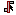 |
Select touching |
Select all objects that are touching the selected brushes. Unlike the previous two commands, this one does not remove the selected brushes, since it is designed to allow you to quickly select objects that are adjacent to real map geometry. |
Working with patches
Patches are smooth-shaded Bezier surfaces that can be created and manipulated in the editor (unlike models), and used to represent a variety of curved shapes such as vaulted ceilings, arches or pillars. Patches are single-sided surfaces, not solid like brushes, and cannot be used to seal a map from the void — any patch work on the boundary of a map will need solid brushes behind it to prevent the map from leaking.
Creating a simple patch
A simple patch starts off as a flat rectangle, which can then be manipulated with vertex editing to produce a curved surface, if desired.
To create a simple patch:
-
Set the 2D view axes (Ctrl + TAB) to define the orientation of the patch. The patch will be created facing directly towards the screen, so to create a horizontal (ceiling or floor) patch, the 2D view should be in XY (Top) orientation.
-
Create a rectangular brush to define the width and height of the patch in the current 2D view (the third dimension is not important, since the patch will be infinitely thin once created).
-
With the brush selected, choose Create Simple Patch Mesh from the Patch menu.
-
In the dialog, choose the number of control points to define the shape of the patch along its width and height. A patch can have between 3 and 15 control points in each dimension; there will always be a control point at the extreme edge, and one in the middle. More control points allow more complex shapes but also require more manual adjustment — creating a simple arch is much easier with just three control points.
-
Click OK to create the patch.
Manipulating control points
With a patch selected, press V to enter (or leave) vertex editing mode. This will display all of the control vertices, and allow you to select and move them.
-
Left click and drag a vertex to move just that one vertex.
-
Shift + Left click to add a vertex to the current selection set. When several vertices are selected, dragging any one of the selected vertices will move all of them together.
-
Shift + Left drag around several vertices to draw a selection rectangle that will toggle the selection state of all vertices inside it, selecting them if unselected and unselecting them if already selected.
More complex patch shapes
Just like with brushes, DarkRadiant offers several default patch shapes beyond the flat simple patch. These can be created by choosing the corresponding option in the Patch menu. There is no need to have a brush selected first in order to create these shapes, however if a brush is selected, it will be removed and used to define the size of the patch shape.
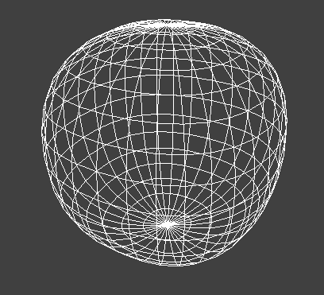 |
Sphere An approximation of a sphere (the quadratic Bezier patch implementation in Doom 3 and DarkRadiant does not permit the creation of a perfect sphere). |
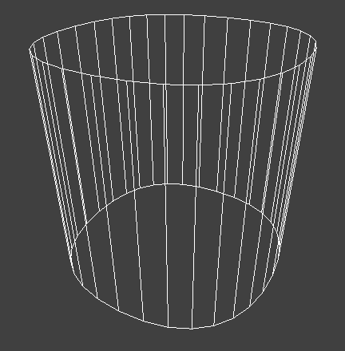 |
Cylinder A hollow cylinder aligned with the direction of the 2D view. |
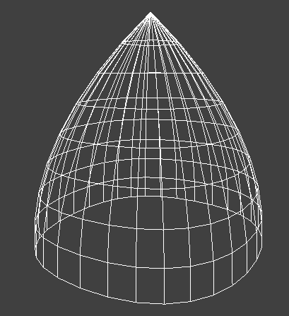 |
Cone A tapered cone pointing along the 2D view axis. |
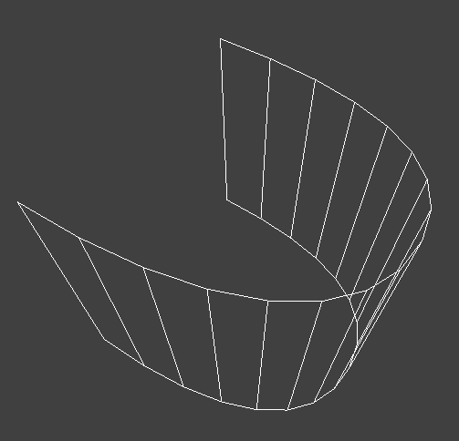 |
End cap An arch or half-cylinder covering a 180 degree angle, aligned with the 2D view axis. The peak of the arch will be at the top if created in front or side views, making this useful for curved ceilings and the like. |
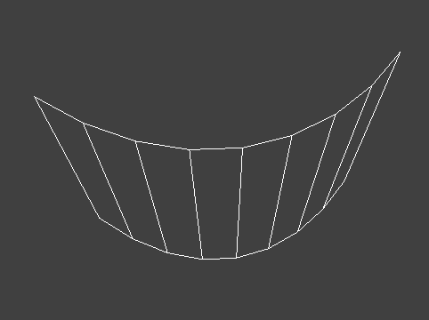 |
Bevel Portion of an arch covering a 90 degree angle. This may be placed along room edges to give a curved appearance. |
Controlling patch subdivision
Although patches are defined by Bezier curves, they are subdivided into flat polygons for rendering. By default, the number of polygons to create is determined dynamically by the game engine, based on the shape of the patch. However, you can also use the Patch Inspector to explicitly set the level of subdivision required, which can be useful when optimising a map by reducing on-screen polygon counts.
To subdivide a patch:
-
Select Patch Inspector in the View menu to make the inspector widget visible.
-
With the patch selected, enable the Fixed Subdivisions checkbox.
-
Use the Horizontal and Vertical numeric spinboxes to set the number of polygons to divide the patch into. The value can range from 1, making the patch completely flat regardless of control point positions, up to a maximum of 32. Each dimension can have a different subdivision level, if required.
Applying textures
When a brush or patch is created, it will be assigned a default texture. To apply a new texture, you must first select the brush, face or patch to be textured. There are two different selection commands:
Shift + Left click |
Select an entire brush or patch. Any chosen texture will apply to all faces. |
|---|---|
Ctrl + Shift + Left click |
Select a single brush face for texturing. This command is only available in the 3D camera view |
Once you have selected the objects or faces to texture, you can use either the Media or the Textures tab to perform the texturing operation.
The Media tab
The Media tab shows a tree view which contains all of the textures available in the game installation. Selecting a texture in the tree will show a small preview swatch, along with some metadata about the texture definition.
To apply a texture to the selected brush, simply Double-click on a texture name in the tree. The tree view also offers a context menu with several options:
Load in Textures view |
Load all textures contained within the selected folder, making them available on the Textures tab. This option is not available when a single texture is highlighted. |
|---|---|
Apply to selection |
Apply the highlighted texture to the current object. This is identical to the Double-click operation, and is only available for single textures, not folders. |
Show Shader Definition |
Show a syntax-highlighted text window containing the definition of the selected texture. |
Selected/deselect elements using this shader |
Select or deselect objects in the map which the highlighted texture is applied to. This can be used for organisational purposes, or to identify whether a texture is used or not. |
Add to/Remove from favourites |
Add or remove the selected texture from the favourites list. The favourites list provides easy access to a user-chosen group of textures, and can be accessed by choosing the Show Favourites radio button at the top of the panel. |
The Textures tab
The Textures tab provides a scrollable canvas containing preview swatches of all the textures which are currently loaded in the current map.
When DarkRadiant first starts up no textures are loaded and this panel is empty. New textures can only be loaded via the Media tab (described in the previous section), either by applying a texture directly to a brush, or by using the Load in Textures view command to explicitly load an entire folder of textures.
Once textures are loaded onto the Textures tab, you can apply them to a selected object by Left clicking on them. By Right clicking on a texture you can access a context menu with a single command Seek in Media browser, which will highlight the clicked texture in the Media tab.
Using the Surface Inspector
Once a texture is applied via the Media or Textures tabs, you will most likely wish to adjust the alignment and scale of the texture on the brush or patch face. DarkRadiant provides the Surface Inspector for this purpose, which can be toggled with the S key or by choosing the option in the View menu.
The Surface Inspector can be used to adjust textures on a single brush or patch face, or several selected faces/brushes/patches at once. If more than one face is selected and these faces have different values for text boxes in the dialog, the text box will be greyed out, however it is still possible to use the buttons to make changes which will be applied uniformly to all selected faces.
Shader |
This shows the full name of the texture applied to the selected face(s). You can use the folder button to bring up a new dialog which allows you to choose a new texture. |
|---|---|
Horiz/Vert Shift |
These text boxes show the current texture shift (translation) on the horizontal and vertical axes. The associated arrow buttons will increase or decrease the texture shift by the current Step value. |
Horiz/Vert Scale |
These show the current texture scale in the horizontal and vertical directions. The arrow buttons will increase or decrease the scale by the current Step value. |
Rotation |
Shows the current texture rotation, in degrees. The arrow buttons will rotate the texture clockwise or anticlockwise by the current Step value. |
Fit Texture |
These controls allow you to fit an exact number of copies of the texture across the face, so that the texture edges correspond to the face edges. The numeric spin boxes control how many copies of the texture are tiled, and the operation is performed by clicking the Fit button. |
Align Texture |
These buttons shift the texture so that the Top/Bottom/Left/Right edge of the face are aligned with a texture boundary, but otherwise do not modify the scaling of the texture (unlike the Fit operation). |
Flip Texture |
Flips (mirrors) the texture along the horizontal or vertical axis. |
Natural |
This button resets the texture to a default alignment and scale, based the location and size of the face. |
Texture Lock |
If this is enabled, the alignment of the texture will be preserved relative to the face if the brush or patch is moved in 3D space. If disabled, the texture itself will remain fixed in 3D space as the brush or patch moves, resulting in the alignment changing. Typically, if you have Fit a particular number of texture tiles across a face, you will want to preserve alignment with Texture Lock. Conversely, if the texture is applied to a much larger group of brushes with a common texture (that needs to align across all of the brushes, regardless of how they are moved or resized), you will want to disable Texture Lock. |
Working with entities
If brushes are the bricks and mortar of a map (often literally), entities are its fixtures and fittings. Every object in a map which "does something" other than form part of the level geometry is an entity: lights, audio speakers, particle emitters, static meshes, animated creatures or machinery. There are also various functional entity types which provide vital metadata to the game engine, such as determining where the player should start, or how creatures should navigate between locations.
DarkRadiant provides certain common functionality to all entities, such as the ability to edit properties using the Entity tab. Particular entity types are sufficiently common, however, that they have their own dedicated creation and editing tools.
- Light
-
Every map requires at least one light source in order to render anything in game. A light occupies a rectangular volume, which can be created and resized much like a brush, and has properties to determine its colour, visible shape and falloff pattern in three dimensions. Lights can optionally cast shadows, and can even be animated to flicker or flash.
- Model (func_static)
-
Model entities represent geometry that is not compiled as part of the map itself. The model geometry can either be derived from brushes and patches created inside DarkRadiant, or from an external model file in ASE or LWO format. Model files are the primary mechanism for including fine detail in a map which would be cumbersome to create with brushes and patches.
- Speaker
-
Essentially the audio equivalent of a light, a speaker entity represents the point from which an in-game sound source will emanate. It has properties to control its size and falloff, and optionally override certain properties of the sound shader itself, such as volume.
- Player start (info_player_start)
-
This entity tells the game engine where to place the player when a map is first loaded. A map without such an entity will not be playable.
Creating lights
To create a light, Right click in the 2D view and choose Create light…. The position and size of the light volume depends on the current selection:
-
If nothing is selected, then a light volume will be created at the clicked position with a default size.
-
If a single brush is selected, the brush will be deleted and the light volume will match the size and position of the brush.
-
If several brushes are selected, then all selected brushes will be deleted and the light volume will be sized according to the bounding box of the brushes (i.e. the smallest box that would contain all of the brushes).
Unselected lights are shown in the 2D view as small boxes, while selected lights also show the boundaries of the light volume.
A selected light entity can be moved by dragging inside the small center box, and it can be resized by dragging outside the edge of the light volume. Unlike brushes, light volumes will by default resize symmetrically, so that the center point does not move during the resize.
|
|
Although light volumes can be resized like brushes, their shape can never be changed; every light is an axis-aligned cuboid. This does not, however, mean that they need to look rectangular in game. See the next section for details on how to change the falloff texture using the light inspector. |
There are a couple of options on the top toolbar which control the display and behaviour of light volumes:
|
Show all light volumes |
If enabled, light volume boundaries will be rendered in the 2D view for all light entities, not just selected entities. The default behaviour is to show only the center box for unselected light entities. |
|---|---|---|
|
Drag-resize entities symmetrically |
If enabled (the default), light entities will be resized symmetrically, without moving the center point. If disabled, lights will be resized like brushes: dragging an edge will move only that edge, while the opposite edge remains fixed. |
The light inspector
When initially created, a light is pure white in colour and has an unrealistic rectangular illumination pattern matching its shape. You can change these properties using the light inspector, which is accessed with the L key.
- Light volume (omni vs projected)
-
The majority of lights in a map will be the default, omnidirectional shape. An omni light is a simple axis-aligned cuboid which emits light in all directions from its center to its edges.
A projected light is pyramid-shaped, and emits light from the tip of the pyramid towards the base. Projected lights behave more like spotlights in real-life, and can be used to highlight particular areas or project images of windows onto the floor.
- Colour
-
Use the colour selector button to display a standard colour selection dialog, or enter the RGB values directly using the text box. As well as changing the hue, the light colour also governs the overall brightness of the light.
- Texture
-
The falloff texture controls the shape of the lit area when rendered in-game; the square texture chosen here will be mapped directly onto the rectangular shape of the light volume. Light textures can be simple, such as the generic circular gradient of
biground1, or much more complex, including multiple colours or animation. - Options
-
There are a few light-propagation options which are mostly used to tweak performance. In particular, disabling shadows for any light which does not actually need to cast shadows can give a significant boost to rendering speed.
Creating models
Static models can be used to provide fine details in a map which would be difficult or impossible to create in the editor with brushes or patches. Models are created with an external 3D application such as Blender, Lightwave or Maya, and saved into the game asset tree in LWO or ASE format.
To insert a model, ensure that nothing is selected, then Right click in the 2D view and choose Create model…. DarkRadiant will show the model selector dialog:
In the top-left of the model selector window is a tree of all available models in the game installation. Models may have different skins, which are variants of the same model with different textures applied. If a model has skins available, these will be listed as children of the model entry in the tree.
Choosing a model or one of its skins will show a preview render in the large widget on the right-hand side. Various metadata such as the polygon count and the applied textures are also shown in table at the lower left.
When you have chosen the desired model, click OK to insert it into the map. The model will be inserted at the position where you originally right-clicked to show the model chooser.
Creating a player start marker
The game requires a special entity (info_player_start) to mark the position at
which the player should enter the map. Without such an entity the map will be
unplayable.
To create this entity, ensure that nothing is selected then Right click in the 2D view and choose Create player start here. DarkRadiant will create the player start entity at the clicked position.
Since it makes no sense to have more than one player start location, DarkRadiant
will not enable the Create player start here menu option if there is already
an info_player_start in the map. Instead, you may choose Move player start
here to move the existing entity to the clicked position.
Creating other entity types
Entity types without a dedicated item in the right-click menu are created using the generic Create entity… option, which displays a dialog very similar to the model selector:
Just like the model selector, the entity selector displays a tree of all
available entity types in the game installation, and a large preview widget
which shows an approximate rendering of the entity, if appropriate. Purely
functional entity types such as info_location or info_player_start do not
have any visible appearance and their render preview will be blank.
Some entity types have a short textual description giving information about their usage; if present, this is displayed in the text box underneath the entity class tree.
After selecting the desired entity type in the tree, click the Add button to insert an instance of the entity into the map at the right-clicked location. If the selected entity type requires a brush selection and no brush is selected, a warning will be shown at this point.
Editing entity properties
Every entity has a list of key/value pairs known as properties or spawnargs. These properties are displayed on the Entity tab of the editing panel.
The entity panel lists all of the properties of the currently-selected entity, showing each property’s name, its current value, and an icon representing its type (boolean, vector, text etc) if known. Selecting a property will populate the two text boxes in the center of the widget with the property name and value, allowing the value to be edited. If the selected property is of a known type, the panel at the bottom will show a custom widget appropriate for editing the particular property, e.g. three separate numeric spinboxes for a vector property, a colour selector widget for a colour property, and so on.
- Changing a property value
-
To change the value of the selected property, simply enter the new value in the lower text box, then hit Enter or click the green tick button. If the property has a type-specific editing widget, you can also change its value using the controls in this widget.
- Adding a new property
-
There are two different ways to add a new property:
-
Enter a new property name in the upper text box (which shows the selected property name), and hit Enter. This does not rename the selected property, but adds a new property with the edited name and the current value.
-
Right click in the list of properties and choose Add property from the context menu. This will display a new dialog listing all known properties along with their descriptive text (if available). Selecting a property in this dialog and choosing OK will add the property to the entity with a default value of "-", which can then be edited in the entity panel itself.
-
- Deleting a property
-
To delete the selected property, Right click on the property in the list and choose Delete property.
The entity panel provides two options controlling its behaviour:
Show inherited properties |
If checked, all properties that apply to the selected entity will be shown, including those which are inherited from the entity type declaration in the game installation. If unchecked, only those properties explicitly set on this particular entity (and stored in the map file) will be shown. You can change the value of an inherited property by selecting it and entering a new value in the entity panel; this will create a new explicit property on the entity which overrides the inherited default. |
|---|---|
Show help |
Enables or disables the text widget at the bottom of the panel which shows a brief explanation of certain properties. If a property has help text available, the question mark icon will be shown in the ? column. |
Compiling a map
DarkRadiant does not include functionality for compiling a map into the form needed by the game engine; instead, you must use external tools or the map compiler built into the game itself.
For Doom 3 and the Dark Mod, the following commands are used within the in-game
console (which can normally be accessed with the key immediately above TAB):
dmap <mymapname.map>
|
Compile the map called |
map <mymapname.map>
|
Load the compiled map |
|
|
When compiling and testing maps, it may be helpful to set your game to play in windowed mode, with a reduced resolution. This will allow both the game and DarkRadiant to be visible on the screen as separate windows, which you can easily switch between during the compile and test cycle. |
Preventing leaks
A map "leak" occurs when the play area is not fully enclosed with a complete shell of opaque brushes. If the map leaks, compilation will fail and the map will not be playable.
In order to minimise the likelihood of a map leak, ensure that your map has all of the following properties:
-
The map interior is completely sealed from the exterior void by brushes (not patches). It is much easier to achieve this by building up a map carefully, making good use of the grid snapping functionality, rather than haphazardly throwing brushes together and hoping to seal them later.
-
All of the sealing brushes have an opaque texture. Skybox textures are considered opaque and are OK, however semi-transparent or perforated mesh textures are not.
-
The origin point of every entity in the map lies within the sealed map interior. It is OK if a large model extends outside of the map, provided that its origin point is on the inside.
| Do not be tempted to avoid leaks by enclosing your entire map in a single huge box. This may seem to solve the problem (the map will indeed not leak), but it completely negates the important performance optimisations that the map compiler carries out when it "flood fills" the map interior. |
Locating leaks with a pointfile
No matter how hard you try to avoid leaks, occasionally they will happen. In this case the pointfile functionality is helpful to identify the location of the leak.
After the map compilation has failed with a leak, return to DarkRadiant and choose Pointfile from the File menu. This will automatically load the point file associated with the current map, which contains a series of points identifying the path to the leak. This path will be rendered as a bright red line in both the 2D and 3D views:
In this example we can clearly see that the map has leaked because the far wall brush does not join up with the ceiling.
Organising a map
Since a fully developed Dark Mod map is large and complex, DarkRadiant provides several tools to make organising a large map easier. Objects can be grouped, sorted into user-defined layers and filtered using various criteria, while the prefab system allows large chunks of map to be reused or shared with other mappers.
Grouping objects
DarkRadiant allows a number of objects to be grouped together, so that they can be selected and manipulated as a single unit.
To create a group:
-
Select several objects.
-
Right-click in the 2D window to show the context menu.
-
Choose Group Selection.
Once the objects are in a group, selecting any object in the group will automatically select all other objects in the same group.
To remove a group, select the group then choose Ungroup Selection from the 2D view context menu.
|
|
Groups can be nested, by creating a group that includes one or more existing groups. When you ungroup such a nested group, the original component groups will be restored. |
Working with prefabs
DarkRadiant allows a collection of objects to be saved to disk as a prefab, which can then be imported into other maps. You can use prefabs to store anything from a single small object to a vast section of map geometry complete with lights and AI.
Exporting to a prefab
-
Select the objects in the map that you wish to include in the prefab.
-
From the File menu, choose Save selected as prefab…
-
Use the file chooser dialog to choose a location and name for the prefab file.
|
|
Unlike actual .map files which must be accessible by the game engine,
prefabs are a DarkRadiant-only feature that have no significance to the engine.
You are therefore free to store prefab files wherever you wish, either inside or
outside the game installation directory.
|
Importing a prefab
Either right-click in the 2D window and choose Insert prefab…, or open the File menu and choose Import prefab…. This will show the prefab browser.
Like the model selector, the prefab selector shows a tree of available prefabs on the left, and a preview window on the right giving an idea of what the prefab looks like. Using the radio buttons at the top of the window, you can choose whether to browse prefabs contained within the game installation, or within a custom directory of your choice.
The preview window functions much like the 3D view in the main application: right click to enter or leave camera mode, which enables the following motion commands:
Mouse move |
Change the camera view direction (pan or tilt) |
|---|---|
Mouse wheel |
Zoom the camera |
Up/Down arrow |
Move the camera forwards or backwards |
Left/Right arrow |
Move the camera left or right |
When you have chosen the desired prefab, click OK to insert it into the map. Before inserting the prefab, you can use the Create Group out of Prefab parts checkbox to control whether the prefab is automatically grouped as a single object, or inserted as separate selectable objects.
Using layers
When a map contains a large number of objects, it may become difficult to work with the 2D views as a result of the visual clutter. Organising the map into several layers can help solve this problem. The visibility of each layer can toggled independently, allowing you to focus on the objects you want to work with.
Layers do not impose any requirements on the physical layout of objects: it is possible to include objects spread all over a map into a single layer. For example, you can have a layer for all enemies, another layer for all lights, another layer for brushwork, and so on.
The Layers window
To show or hide the Layers window, choose Layers from the Edit menu. The
window lists all of the layers which exist in the current project, and allows
you to perform various operations on them.
- Creating a layer
-
To create a new layer, click the
Newbutton at the bottom of the window. A popup will be shown asking for the name of the new layer. Once the layer is created, it will appear in the list. - Deleting a layer
-
Click the red 'X' button to the right of a layer to delete it. Deleting a layer does not delete the objects in the layer, only the layer itself. Any objects in that layer will be moved to the default layer.
- Renaming a layer
-
Click the edit button to the right of a layer name to change the name. A popup will be shown asking for the new name.
- Selecting objects on a layer
-
Click on the name of a layer itself to select all objects on that layer.
- Toggling visibility
-
The button to the left of a layer name is used to toggle the visibility of objects on that layer. If objects are visible, a tick is shown in the button, otherwise it is empty.
- Changing the active layer
-
The visibility toggle button shows a star for the layer which is currently set as the active layer. To change the active layer, Ctrl + Left click on the layer you wish to set as the new active layer.
Moving objects into layers
An object can be placed in any number of layers. To see which layers a selected object is in, look at the narrow coloured rectangle next to the layer name in the Layers window. The rectangle will turn from grey to pink for each layer that contains the selected object.
All newly-created objects will be placed in the Default layer. You can move or copy objects between layers using the options in the 2D view’s context menu.
- Create layer…
-
Bring up the name entry dialog and create a new layer, exactly as if the New button in the Layers window had been clicked.
- Add to layer…
-
Copy the selected object into the chosen layer, without removing it from its existing layer(s).
- Move to layer…
-
Move the selected object into the chosen layer, removing it from all other layers.
- Remove from layer…
-
Remove the selected object from the chosen layer.
Filtering map elements
While the Layers feature allows maps to be organised into manual groupings of objects, DarkRadiant also provides a mechanism for controlling the visibility of items based on their characteristics. This is controlled via the Filter menu.
Built-in filters
The Filter menu is populated with a number of built-in filter rules which are expected to be useful to mappers. Each filter may be activated independently, and each activated filter will be shown with a tick alongside its name. Filters operate in a "subtractive" sense: if a filter is active, objects matched by that filter will be hidden; the remaining visible objects will be those which are not matched by any active filters.
|
|
Active filters are persisted into settings, and are therefore retained between DarkRadiant sessions. |
The built-in filters include:
All entities |
Hide all entities other than the worldspawn, leaving only brushes and patches visible. |
|---|---|
World geometry |
The inverse of All entities. Hides brushes and patches while leaving entities visible. |
Brushes |
Hide only brushes, leaving patches and entities visible. |
Patches |
Hide only patches, leaving brushes and entities visible. |
Caulk |
Hide any brush or patch which has the caulk texture applied to at least one surface. |
Collision surfaces |
Hide the additional collision meshes which are embedded in certain models, while leaving the models themselves visible. This filter is especially useful because collision meshes often obscure parts of the model itself. |
Aside from the list of filters, the Filter menu contains three other options:
Activate all filters |
Activate every filter in the list. Very unlikely to be useful, because it will probably result in every object in the map becoming invisible. |
|---|---|
Deactivate all filters |
Turn off all active filters. This one is useful, since you may have manually activated a number of filters and want to turn them all off at once. |
Edit filters… |
Display a dialog allowing you to create, edit and manage the list of available filters. |
Customising filters
In addition to the filters supplied with the mod distribution, DarkRadiant also allows you to add your own custom filters to the list by choosing the Edit Filters… menu option. This displays a dialog containing the list of all available filters, including built-in ones. Use the Add and Delete buttons to add or remove custom filters from the list, and the Edit button to enter a new dialog which allows you to edit the rules of the selected filter.
Built-in filters cannot be removed or edited, but you can choose the View button to open the filter editor in a read-only mode.
Each filter consists of a number of rules, which are applied in the order shown in the list box. Filters may contain only a single rule ("hide all speaker entities"), or multiple rules ("hide all entities, then show only speaker entities"). You can freely add, remove or reorder rules using the buttons to the right of the rules list.
Each rule has the following components:
- Index
-
An integer representing the rule’s position in the list, numbered from zero.
- Type
-
This controls what the rule is "looking for" when it tries to match objects to hide or show. Currently there are four rule types: entityclass which matches the classname of entities (e.g. "speaker"), object which matches either "brush" or "patch" and is used for controlling the visibility of map geometry, texture which matches the name of an applied texture, and entitykeyvalue which matches the value of a specific property on the entity.
- Entity Key
-
This column is only used for entitykeyvalue rules, in which case it contains the name of the property to match (while the value to match will be contained in the Match column).
- Match
-
This contains the actual value to be matched by the rule. Its interpretation and allowed values will depend on the rule type. For object type rules the value must be "brush" or "patch", whereas with all other rule types the value may be any arbitrary string.
- Action
-
Choose whether this rule will result in matched objects being shown, or hidden. The filter system starts with everything being visible by default, so a filter which does not contain at least one hide rule will have no effect.
The entity list
As a map becomes larger and more complex, keeping track of its contents may become more challenging. To assist with this, DarkRadiant provides an Entity List which functions as an "outline" view of the map, listing all entities and their child brushes and patches (if any).
The entity list can be accessed by choosing the Entity List option from the View menu.
The tree structure shown in the entity list corresponds to the structure of the map itself: a single "world" entity which acts as the parent of the brushes and patches in the map, alongside a number of other entities that have been placed by the mapper, some of which may contain their own child brushes or patches.
Clicking on an entity in the list will cause it to be selected in the map. If the Focus camera on selected entity checkbox is enabled, the camera will additionally be moved to view the clicked entity.
By enabling the List visible nodes only checkbox, you can limit the entity list to show only entities which are not currently hidden via filters.
Command reference
File menu
- New map
-
Prompt to save and close the current map (if necessary), then start working on a new empty map.
- Open map…
-
Prompt to save and close the current map (if necessary), then display a file browser to choose and load an existing map file from disk.
- Import map…
-
Display a file browser to choose and load an existing map file from disk, merging the contents with the existing map
- Import prefab…
-
Display the prefab browser to choose and import a prefab from disk.
|
|
Importing a map and importing a prefab are functionally identical operations; the only difference is the user interface used for choosing what to import. The prefab browser is designed to offer a user-friendly workflow for browsing, previewing and importing from a library of frequently-used map elements, while Import map may be more useful for merging two or more partially-complete maps. |
- Save
-
Save the current map to disk under its existing file name.
- Save as…
-
Display a file browser to choose a new name for the current map, then save to this new file name in future.
- Save copy as…
-
Display a file browser to choose a new filename to save this map into, without changing the current map name for future Save operations.
Configuring DarkRadiant
DarkRadiant offers a large number of configurable options which can be used to tailor its behaviour to your desired workflow. Most of these options can be found either in the Preferences dialog or exposed directly as menu items.
The Preferences dialog
The Preferences dialog can be shown by choosing Preferences… from the Edit
menu. The dialog contains a number of pages containing groups of logically
related options.
Camera settings
The Camera page contains options relating to the movement and behaviour of the 3D camera.
- Movement Speed
-
Use this slider to control how many game units the camera moves forwards or backwards when you use the scroll wheel in the 3D view. It does not affect the speed of rotation or lateral dragging (e.g. with Ctrl) in free look mode, nor does it affect motion with the arrow keys.
- Rotation Speed
-
This controls the speed of angular rotation when dragging the mouse after entering free look mode with right-click. If you have a high DPI mouse and want to be able to direct the camera more precisely, reducing this setting may help.
- Freelook mode can be toggled
-
Disabling this checkbox makes the free look functionality behave more like typical MMO games, where you hold down the right mouse button and drag to move the camera around. Uncheck this option if you hate modal interfaces or find the default toggle behaviour confusing.
- Discrete movement (non-freelook mode)
-
If this is checked, moving the camera with the arrow keys in non-freelook mode will cause discrete jumps in position, rather than smooth motion.
- Enable far clip plane
-
You can completely disable the far clip plane by unchecking this option. This will avoid the need to manage the position of the far clip plane, but may negatively impact rendering performance in large or complex maps.
- Invert mouse vertical axis
-
Enable this option to flip the sense of the vertical camera motion when freelook mode is enabled, so that moving the mouse upwards tilts the camera downwards, and vice versa.
- Solid selection boxes
-
This option controls whether selected brushes are drawn with a dashed outline (option disabled) or a solid line (option enabled). It affects both the 2D and the 3D views.
- Show camera toolbar
-
Uncheck this to completely hide the toolbar at the top of the 3D camera window (which includes the render mode buttons and the far clip plane controls).
Orthoview settings
The Orthoview page contains options controlling the display and behaviour of the 2D views.
- View chases mouse cursor during drags
-
If this is enabled, dragging an object off the edge of a 2D view will cause the 2D view to automatically scroll to keep the dragged object in view. If disabled, the dragged object will reach the edge and stop. You can control the speed of the scrolling with the Maximum Chase Mouse Speed slider.
- Update views on camera movement
-
This option controls whether the camera position indicator in the 2D views is automatically kept in sync with camera movements in the 3D window. If this option is disabled, the 2D view camera indicator may not move until you explicitly click on or interact with a 2D view.
- Show crosshairs
-
Enable this option to display full-window-sized crosshairs tracking the mouse cursor whenever it moves over a 2D window. This may assist with precise selection or object alignment.
- Show grid
-
Control the visibility of grid lines in the 2D views. This does not affect the snapping behaviour, just the visual rendering of the grid.
- Show size info
-
Control the visibility of the text overlays which show the dimensions of a selected object on the X, Y or Z axes. This option is also available in the
View → Showmenu. - Show entity angle arrow
-
Hide or show the small arrow which indicates the direction of an entity with an
anglespawnarg, such asinfo_player_start. This affects both the 2D and 3D views. - Show entity names
-
Enable this to show permanently-visible text names next to each entity in the map. This option is also available as
View → Show → Show names. - Show blocks
-
If enabled, the world space is divided into a horizontal grid of 1024x1024 unit blocks (of infinite height) which are outlined in blue in the 2D views. Each block is assigned a pair of numbers representing its position from the centermost block, which is assigned
(0, 0). This might help with "blocking out" a map at the beginning of the design phase. This option is also available in theView → Showmenu. - Show coordinates
-
Toggle the visibility of the coordinate rulers along the edges of the 2D window. Also available in the
View → Showmenu. - Show axes
-
Control the visibility of the axis widget displayed at the top-left of each 2D window and at the world origin. Also available in the
View → Showmenu. - Show window outline
-
Enable this to draw a rectangular outline around the edge of the 2D window. Depending on the platform and GUI theme this may be almost invisible, but might be useful to improve visibility in certain environments.
- Show workzone
-
The 'workzone' is an imaginary axis-aligned cuboid which encloses the set of currently-selected items (this is what defines the volume of a new light, when a light is created from one or more existing brushes). Enabling this option causes the workzone to be outlined in red in the 2D views. Also available in the
View → Showmenu. - Translate manipulator always constrained to axis
-
This option affects the behaviour of the translate manipulator. When the option is disabled, dragging a selected object in translation mode will behave as if the manipulator’s central square is being dragged, and allow motion in two dimensions. If the option is enabled, dragging the selected object will behave as if the closest manipulator arrow is being dragged, and allow motion along only a single axis. Translation in two dimensions will always be possible by clicking on the manipulator’s central square directly, regardless of the state of this option.
- Higher selection priority for entities
-
When using the mouse to click on and select an entity which is in front of, behind or inside a brush, this option controls whether DarkRadiant will prefer to select the entity (enabled) or the brush (disabled).
Multi Monitor settings
The Multi Monitor page contains a single setting, Start DarkRadiant on monitor, which allows you to choose which monitor DarkRadiant will start on if you have several available.
Autosave settings
- Enable Autosave
-
Controls whether the autosave feature is active or disabled.
- Autosave Interval
-
Use this slider to choose how often DarkRadiant will make an autosave. By default, autosaves are made every 5 minutes.
- Save Snapshots
-
If this option is enabled, DarkRadiant will make each autosave into a separate copy of the map file, allowing you to potentially revert changes which were made several autosaves ago. If this option is disabled, there will only ever be a single autosave file, which will protect against DarkRadiant or system crashes but not against long-term erroneous changes.
- Snapshot folder
-
This specifies the name of the folder used to store snapshot autosaves, if the Save Snapshots option is enabled.
- Max Snapshot size per map
-
This allows you to control the amount of disk space used for storing snapshots, by specifying a maximum number of megabytes that will be used for storing the snapshots for a single map. If the disk usage grows above this limit, DarkRadiant will start to delete old snapshots.
Clipper settings
- Clipper tool uses caulk texture
-
If this option is enabled, the clipper tool will texture the newly-created clip face with the texture specified in the Caulk shader name text field. If the option is disabled, the new face will be given the same texture as the rest of the brush.
Grid settings
This page contains a couple of options relating to the appearance and default behaviour of the grid.
- Default grid size
-
Use this combo box to choose the default grid size used in new projects (to change the grid size in the current project, use the options in the Grid main menu).
- Major grid style
-
Choose the rendering style for the major grid lines. Available options are Lines, Dotted Lines, More Dotted Lines, Crosses, Dots, Big Dots, and Squares.
- Minor grid style
-
Choose the rendering style for the minor grid lines. Available options are the same as the Major grid style combo box.
Selection settings
- Ignore light volume bounds when calculating default rotation pivot location
-
This option affects the behaviour of the rotation tool when multiple objects are selected. DarkRadiant will place the rotation widget at the approximate "center of gravity" of the set of selected objects. If this option is enabled, any selected lights will be treated as point entities, with no volume in 3D space regardless of their actual light volumes. If this option is disabled, the entire light volume will be taken into account as if the light were a rectangular brush.
Undo settings
- Undo Queue Size
-
Use this spinbox to control the number of operations which are saved onto DarkRadiant’s internal undo stack. Larger values provide a longer history of undoable operations, at the expense of requiring more memory.
Primitives settings
This page contains two options controlling the default behaviour of applied textures. These values can be set on a per-object basis using the Surface Inspector.
- Default texture scale
-
Set a default scale factor for newly applied textures.
- Enable texture lock
-
Set the default value of the Texture Lock button. See the Surface Inspector section for more details on this feature.
Texture Browser settings
These options control the behaviour of the Textures tab.
- Uniform texture thumbnail size
-
Choose the size in pixels that will be used for texture thumbnails.
- Texture scrollbar
-
Hide or show the scrollbar in the textures tab. If the scrollbar is hidden, scrolling is only possible with the mouse wheel.
- Mousewheel increment
-
This option determines how much the window is scrolled when the mouse wheel is rotated.
- Max shadername length
-
Choose the maximum number of characters that may appear in each texture name. If a texture contains more characters than this, the texture name will be abbreviated with "…" in the middle.
Map files settings
- Number of most recently used files
-
Choose the number of map files to list in the recent map section at the bottom of the File menu.
- Open last map on startup
-
Enable this option to make DarkRadiant automatically load the most recently-used map every time it starts, rather than starting with an empty map.
Features for game distributors
DarkRadiant is designed to work out of the box with a standard Doom 3 or Dark Mod game installation, however it also offers a few features aimed at developers of the game itself.
Controlling asset visibility
As the development of a game progresses, certain models or textures may become obsolete or deprecated, either because they are no longer needed or because they fall short of the quality standard that is expected of new assets. If these models and textures have already been distributed, removing them from the game installation may be problematic, as maps which depend on them will fail to load correctly.
DarkRadiant offers a mechanism to deal with this by allowing certain assets to be marked as "hidden". A hidden asset will no longer be presented for selection by the user (e.g. on the Media tab or in the Model selector), but will continue to function as normal when it appears in a loaded map.
Creating an assets.lst file
To change the visibility of assets, you need to create a file called
assets.lst which resides in the top-level models or materials directories
in the mod installation. This file may be inside a PK4 or in an extracted
directory tree.
The contents of assets.lst are a simple list of key/value pairs, assigning a
visibility value to each named asset. For example:
darkmod/chairs/some_broken_chair.lwo=hidden darkmod/tables/another_table.ase=hidden
Asset paths listed on the left-hand side are interpreted relative to the
directory containing assets.lst (which must be models or materials). The
visibility value on the right-hand side must be either hidden or normal; a
value of normal is equivalent to not listing the file at all, and results in
no change to its visibility.
|
|
Only files may be listed in an assets.lst, not items in a virtual
hierarchy such as the material shader tree. When an MTR file is listed as hidden
in the materials directory, all shaders contained within it will be hidden in
DarkRadiant. This means that in order to hide specific shaders, you must move
these into one or more MTR files which are listed as hidden.
|